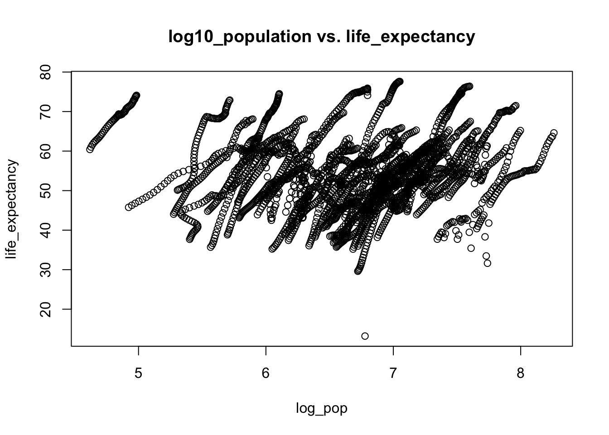
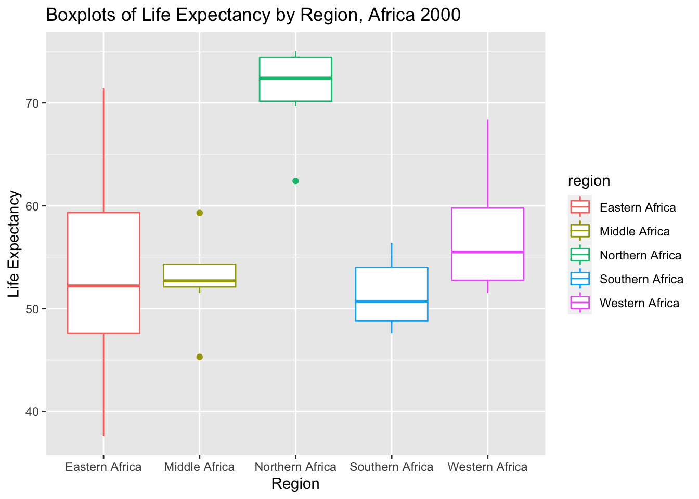
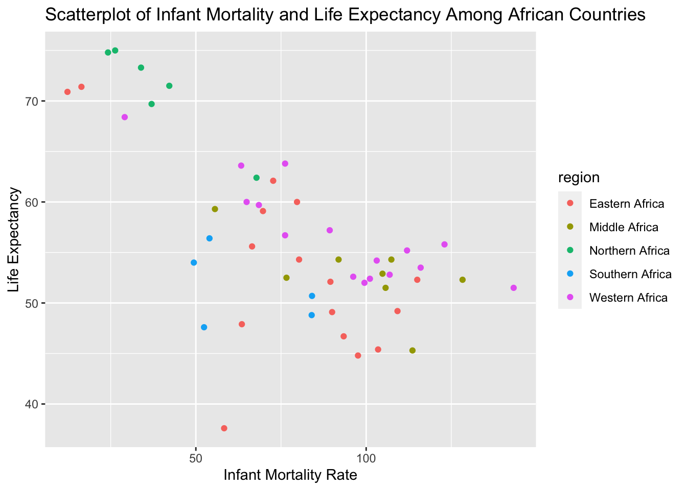
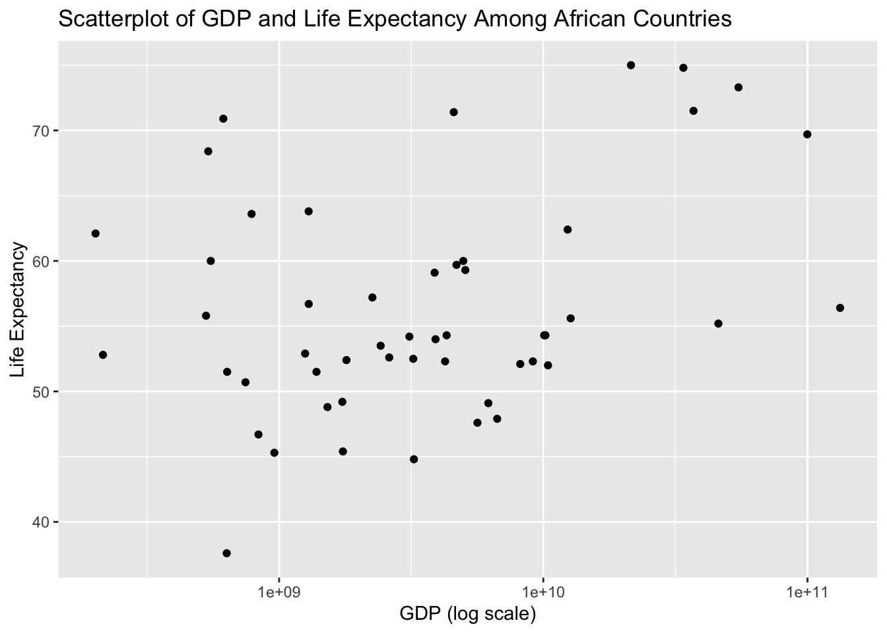

This will contain the future R coding exercise.
#load dslabs package
library("dslabs")
#look at help file for gapminder data
help(gapminder)
#get an overview of data structure
str(gapminder)## 'data.frame': 10545 obs. of 9 variables:
## $ country : Factor w/ 185 levels "Albania","Algeria",..: 1 2 3 4 5 6 7 8 9 10 ...
## $ year : int 1960 1960 1960 1960 1960 1960 1960 1960 1960 1960 ...
## $ infant_mortality: num 115.4 148.2 208 NA 59.9 ...
## $ life_expectancy : num 62.9 47.5 36 63 65.4 ...
## $ fertility : num 6.19 7.65 7.32 4.43 3.11 4.55 4.82 3.45 2.7 5.57 ...
## $ population : num 1636054 11124892 5270844 54681 20619075 ...
## $ gdp : num NA 1.38e+10 NA NA 1.08e+11 ...
## $ continent : Factor w/ 5 levels "Africa","Americas",..: 4 1 1 2 2 3 2 5 4 3 ...
## $ region : Factor w/ 22 levels "Australia and New Zealand",..: 19 11 10 2 15 21 2 1 22 21 ...#get a summary of data
summary(gapminder)## country year infant_mortality life_expectancy
## Albania : 57 Min. :1960 Min. : 1.50 Min. :13.20
## Algeria : 57 1st Qu.:1974 1st Qu.: 16.00 1st Qu.:57.50
## Angola : 57 Median :1988 Median : 41.50 Median :67.54
## Antigua and Barbuda: 57 Mean :1988 Mean : 55.31 Mean :64.81
## Argentina : 57 3rd Qu.:2002 3rd Qu.: 85.10 3rd Qu.:73.00
## Armenia : 57 Max. :2016 Max. :276.90 Max. :83.90
## (Other) :10203 NA's :1453
## fertility population gdp continent
## Min. :0.840 Min. :3.124e+04 Min. :4.040e+07 Africa :2907
## 1st Qu.:2.200 1st Qu.:1.333e+06 1st Qu.:1.846e+09 Americas:2052
## Median :3.750 Median :5.009e+06 Median :7.794e+09 Asia :2679
## Mean :4.084 Mean :2.701e+07 Mean :1.480e+11 Europe :2223
## 3rd Qu.:6.000 3rd Qu.:1.523e+07 3rd Qu.:5.540e+10 Oceania : 684
## Max. :9.220 Max. :1.376e+09 Max. :1.174e+13
## NA's :187 NA's :185 NA's :2972
## region
## Western Asia :1026
## Eastern Africa : 912
## Western Africa : 912
## Caribbean : 741
## South America : 684
## Southern Europe: 684
## (Other) :5586#determine the type of object gapminder is
class(gapminder)## [1] "data.frame"africadata = gapminder[gapminder$continent=='Africa',]
str(africadata)## 'data.frame': 2907 obs. of 9 variables:
## $ country : Factor w/ 185 levels "Albania","Algeria",..: 2 3 18 22 26 27 29 31 32 33 ...
## $ year : int 1960 1960 1960 1960 1960 1960 1960 1960 1960 1960 ...
## $ infant_mortality: num 148 208 187 116 161 ...
## $ life_expectancy : num 47.5 36 38.3 50.3 35.2 ...
## $ fertility : num 7.65 7.32 6.28 6.62 6.29 6.95 5.65 6.89 5.84 6.25 ...
## $ population : num 11124892 5270844 2431620 524029 4829291 ...
## $ gdp : num 1.38e+10 NA 6.22e+08 1.24e+08 5.97e+08 ...
## $ continent : Factor w/ 5 levels "Africa","Americas",..: 1 1 1 1 1 1 1 1 1 1 ...
## $ region : Factor w/ 22 levels "Australia and New Zealand",..: 11 10 20 17 20 5 10 20 10 10 ...summary(africadata)## country year infant_mortality life_expectancy
## Algeria : 57 Min. :1960 Min. : 11.40 Min. :13.20
## Angola : 57 1st Qu.:1974 1st Qu.: 62.20 1st Qu.:48.23
## Benin : 57 Median :1988 Median : 93.40 Median :53.98
## Botswana : 57 Mean :1988 Mean : 95.12 Mean :54.38
## Burkina Faso: 57 3rd Qu.:2002 3rd Qu.:124.70 3rd Qu.:60.10
## Burundi : 57 Max. :2016 Max. :237.40 Max. :77.60
## (Other) :2565 NA's :226
## fertility population gdp continent
## Min. :1.500 Min. : 41538 Min. :4.659e+07 Africa :2907
## 1st Qu.:5.160 1st Qu.: 1605232 1st Qu.:8.373e+08 Americas: 0
## Median :6.160 Median : 5570982 Median :2.448e+09 Asia : 0
## Mean :5.851 Mean : 12235961 Mean :9.346e+09 Europe : 0
## 3rd Qu.:6.860 3rd Qu.: 13888152 3rd Qu.:6.552e+09 Oceania : 0
## Max. :8.450 Max. :182201962 Max. :1.935e+11
## NA's :51 NA's :51 NA's :637
## region
## Eastern Africa :912
## Western Africa :912
## Middle Africa :456
## Northern Africa :342
## Southern Africa :285
## Australia and New Zealand: 0
## (Other) : 0s1 = africadata[,c('infant_mortality','life_expectancy')]
str(s1)## 'data.frame': 2907 obs. of 2 variables:
## $ infant_mortality: num 148 208 187 116 161 ...
## $ life_expectancy : num 47.5 36 38.3 50.3 35.2 ...summary(s1)## infant_mortality life_expectancy
## Min. : 11.40 Min. :13.20
## 1st Qu.: 62.20 1st Qu.:48.23
## Median : 93.40 Median :53.98
## Mean : 95.12 Mean :54.38
## 3rd Qu.:124.70 3rd Qu.:60.10
## Max. :237.40 Max. :77.60
## NA's :226s2 = africadata[,c('population','life_expectancy')]
str(s2)## 'data.frame': 2907 obs. of 2 variables:
## $ population : num 11124892 5270844 2431620 524029 4829291 ...
## $ life_expectancy: num 47.5 36 38.3 50.3 35.2 ...summary(s2)## population life_expectancy
## Min. : 41538 Min. :13.20
## 1st Qu.: 1605232 1st Qu.:48.23
## Median : 5570982 Median :53.98
## Mean : 12235961 Mean :54.38
## 3rd Qu.: 13888152 3rd Qu.:60.10
## Max. :182201962 Max. :77.60
## NA's :51s2$log_pop = log10(s2$population)
attach(s1)
plot(infant_mortality,life_expectancy,main="infant_mortality vs. life_expectancy")detach(s1)
attach(s2)
plot(log_pop,life_expectancy,main="log10_population vs. life_expectancy")
detach(s2)
# I think each streak represents an African country's life_expectancy over the past decades. As the time went by, the pupulation grew bigger, and life expectancy went up as the quality of life improved.
data_2000 = africadata[africadata$year==2000,]
str(data_2000)## 'data.frame': 51 obs. of 9 variables:
## $ country : Factor w/ 185 levels "Albania","Algeria",..: 2 3 18 22 26 27 29 31 32 33 ...
## $ year : int 2000 2000 2000 2000 2000 2000 2000 2000 2000 2000 ...
## $ infant_mortality: num 33.9 128.3 89.3 52.4 96.2 ...
## $ life_expectancy : num 73.3 52.3 57.2 47.6 52.6 46.7 54.3 68.4 45.3 51.5 ...
## $ fertility : num 2.51 6.84 5.98 3.41 6.59 7.06 5.62 3.7 5.45 7.35 ...
## $ population : num 31183658 15058638 6949366 1736579 11607944 ...
## $ gdp : num 5.48e+10 9.13e+09 2.25e+09 5.63e+09 2.61e+09 ...
## $ continent : Factor w/ 5 levels "Africa","Americas",..: 1 1 1 1 1 1 1 1 1 1 ...
## $ region : Factor w/ 22 levels "Australia and New Zealand",..: 11 10 20 17 20 5 10 20 10 10 ...summary(data_2000)## country year infant_mortality life_expectancy
## Algeria : 1 Min. :2000 Min. : 12.30 Min. :37.60
## Angola : 1 1st Qu.:2000 1st Qu.: 60.80 1st Qu.:51.75
## Benin : 1 Median :2000 Median : 80.30 Median :54.30
## Botswana : 1 Mean :2000 Mean : 78.93 Mean :56.36
## Burkina Faso: 1 3rd Qu.:2000 3rd Qu.:103.30 3rd Qu.:60.00
## Burundi : 1 Max. :2000 Max. :143.30 Max. :75.00
## (Other) :45
## fertility population gdp continent
## Min. :1.990 Min. : 81154 Min. :2.019e+08 Africa :51
## 1st Qu.:4.150 1st Qu.: 2304687 1st Qu.:1.274e+09 Americas: 0
## Median :5.550 Median : 8799165 Median :3.238e+09 Asia : 0
## Mean :5.156 Mean : 15659800 Mean :1.155e+10 Europe : 0
## 3rd Qu.:5.960 3rd Qu.: 17391242 3rd Qu.:8.654e+09 Oceania : 0
## Max. :7.730 Max. :122876723 Max. :1.329e+11
##
## region
## Eastern Africa :16
## Western Africa :16
## Middle Africa : 8
## Northern Africa : 6
## Southern Africa : 5
## Australia and New Zealand: 0
## (Other) : 0s3 = data_2000[,c('infant_mortality','life_expectancy')]
str(s3)## 'data.frame': 51 obs. of 2 variables:
## $ infant_mortality: num 33.9 128.3 89.3 52.4 96.2 ...
## $ life_expectancy : num 73.3 52.3 57.2 47.6 52.6 46.7 54.3 68.4 45.3 51.5 ...summary(s3)## infant_mortality life_expectancy
## Min. : 12.30 Min. :37.60
## 1st Qu.: 60.80 1st Qu.:51.75
## Median : 80.30 Median :54.30
## Mean : 78.93 Mean :56.36
## 3rd Qu.:103.30 3rd Qu.:60.00
## Max. :143.30 Max. :75.00s4 = data_2000[,c('population','life_expectancy')]
str(s4)## 'data.frame': 51 obs. of 2 variables:
## $ population : num 31183658 15058638 6949366 1736579 11607944 ...
## $ life_expectancy: num 73.3 52.3 57.2 47.6 52.6 46.7 54.3 68.4 45.3 51.5 ...summary(s4)## population life_expectancy
## Min. : 81154 Min. :37.60
## 1st Qu.: 2304687 1st Qu.:51.75
## Median : 8799165 Median :54.30
## Mean : 15659800 Mean :56.36
## 3rd Qu.: 17391242 3rd Qu.:60.00
## Max. :122876723 Max. :75.00s4$log_pop = log10(s4$population)
attach(s3)
plot(infant_mortality,life_expectancy,main="infant_mortality vs. life_expectancy")detach(s3)
attach(s4)
plot(log_pop,life_expectancy,main="log10_population vs. life_expectancy")detach(s4)
fit1 <- lm(life_expectancy ~ infant_mortality, data=s3)
summary(fit1)##
## Call:
## lm(formula = life_expectancy ~ infant_mortality, data = s3)
##
## Residuals:
## Min 1Q Median 3Q Max
## -22.6651 -3.7087 0.9914 4.0408 8.6817
##
## Coefficients:
## Estimate Std. Error t value Pr(>|t|)
## (Intercept) 71.29331 2.42611 29.386 < 2e-16 ***
## infant_mortality -0.18916 0.02869 -6.594 2.83e-08 ***
## ---
## Signif. codes: 0 '***' 0.001 '**' 0.01 '*' 0.05 '.' 0.1 ' ' 1
##
## Residual standard error: 6.221 on 49 degrees of freedom
## Multiple R-squared: 0.4701, Adjusted R-squared: 0.4593
## F-statistic: 43.48 on 1 and 49 DF, p-value: 2.826e-08# since the p_value is close to 0, infant_mortality and life_expectancy are highly associated
fit2 <- lm(life_expectancy ~ log_pop, data=s4)
summary(fit2)##
## Call:
## lm(formula = life_expectancy ~ log_pop, data = s4)
##
## Residuals:
## Min 1Q Median 3Q Max
## -19.113 -4.809 -1.554 3.907 18.863
##
## Coefficients:
## Estimate Std. Error t value Pr(>|t|)
## (Intercept) 65.324 12.520 5.217 3.65e-06 ***
## log_pop -1.315 1.829 -0.719 0.476
## ---
## Signif. codes: 0 '***' 0.001 '**' 0.01 '*' 0.05 '.' 0.1 ' ' 1
##
## Residual standard error: 8.502 on 49 degrees of freedom
## Multiple R-squared: 0.01044, Adjusted R-squared: -0.009755
## F-statistic: 0.517 on 1 and 49 DF, p-value: 0.4755# since the p_value is much greater than 0, population and life_expectancy are not much associatedHere we look at Region and how it impacts Life Expectancy. We also run a multivariate model with Infant Mortality and Region.
library(broom)
library(ggplot2)
# I was first interested in how region comes in to play so I made boxplots of life expectancy
# stratified by region. Here we see that the mean life expectancy in North African Countries is
# much higher around 75 while others are closer to 55.
ggplot(data_2000, aes(x=region, y=life_expectancy, color= region)) + geom_boxplot() + ggtitle("Boxplots of Life Expectancy by Region, Africa 2000") +
xlab("Region") + ylab("Life Expectancy") 
# After seeing this, I decided to plot the relationship between infant mortality again,
# but this time color in the points with region to see how this relationship might vary
# by region.
ggplot(data_2000, aes(x=infant_mortality, y=life_expectancy, colour= region)) + geom_point() + ggtitle("Scatterplot of Infant Mortality and Life Expectancy Among African Countries") +
xlab("Infant Mortality Rate") + ylab("Life Expectancy") 
#Now I want to run a model with both infant mortality and region as predictors
#First I have to make a new variable so I can get the order correct for reference coding.
#Since we saw that the mean life expectancy was so much higher in
#North Africa, we use that as the reference. Note: I tried to do this
#without making a new variable, but it would not work. I think it
#got weird because of all of the categories from other coninents.
#See below when I table it...
table(data_2000$region)##
## Australia and New Zealand Caribbean Central America
## 0 0 0
## Central Asia Eastern Africa Eastern Asia
## 0 16 0
## Eastern Europe Melanesia Micronesia
## 0 0 0
## Middle Africa Northern Africa Northern America
## 8 6 0
## Northern Europe Polynesia South America
## 0 0 0
## South-Eastern Asia Southern Africa Southern Asia
## 0 5 0
## Southern Europe Western Africa Western Asia
## 0 16 0
## Western Europe
## 0#here I make the new variable and order it as such
data_2000$newregion <- NA
data_2000$newregion[data_2000$region == "Northern Africa" ] <- "1:Northern Africa"
data_2000$newregion[data_2000$region == "Eastern Africa" ] <- "2:Eastern Africa"
data_2000$newregion[data_2000$region == "Middle Africa" ] <- "3:Middle Africa"
data_2000$newregion[data_2000$region == "Southern Africa" ] <- "4:Southern Africa"
data_2000$newregion[data_2000$region == "Western Africa" ] <- "5:Western Africa"
#checking
table(data_2000$newregion)##
## 1:Northern Africa 2:Eastern Africa 3:Middle Africa 4:Southern Africa
## 6 16 8 5
## 5:Western Africa
## 16#now we run the model with Infant Mortality and Region as predictors
fit3 <- lm(life_expectancy ~ infant_mortality + newregion, data=data_2000)
summary(fit3)##
## Call:
## lm(formula = life_expectancy ~ infant_mortality + newregion,
## data = data_2000)
##
## Residuals:
## Min 1Q Median 3Q Max
## -19.1675 -2.4682 0.6053 2.2362 7.8495
##
## Coefficients:
## Estimate Std. Error t value Pr(>|t|)
## (Intercept) 77.85778 2.18567 35.622 < 2e-16 ***
## infant_mortality -0.17479 0.02694 -6.488 5.87e-08 ***
## newregion2:Eastern Africa -10.89992 2.47117 -4.411 6.35e-05 ***
## newregion3:Middle Africa -7.93043 3.00557 -2.639 0.0114 *
## newregion4:Southern Africa -15.03481 2.93828 -5.117 6.23e-06 ***
## newregion5:Western Africa -4.97664 2.67208 -1.862 0.0691 .
## ---
## Signif. codes: 0 '***' 0.001 '**' 0.01 '*' 0.05 '.' 0.1 ' ' 1
##
## Residual standard error: 4.71 on 45 degrees of freedom
## Multiple R-squared: 0.721, Adjusted R-squared: 0.6901
## F-statistic: 23.26 on 5 and 45 DF, p-value: 1.828e-11tidy(fit3)## # A tibble: 6 x 5
## term estimate std.error statistic p.value
## <chr> <dbl> <dbl> <dbl> <dbl>
## 1 (Intercept) 77.9 2.19 35.6 1.29e-34
## 2 infant_mortality -0.175 0.0269 -6.49 5.87e- 8
## 3 newregion2:Eastern Africa -10.9 2.47 -4.41 6.35e- 5
## 4 newregion3:Middle Africa -7.93 3.01 -2.64 1.14e- 2
## 5 newregion4:Southern Africa -15.0 2.94 -5.12 6.23e- 6
## 6 newregion5:Western Africa -4.98 2.67 -1.86 6.91e- 2When controlling for region, we see that coefficient for infant mortality is significant at the 0.05 level. Among African countries, when controlling for region, for every one unit increase in infant mortality rate, there is a 0.18 decrease in life expectancy (p<0.001). When controlling for infant mortality, we see that the categorical variable for region has sigificant mean differences in life expectancy when comparing East vs North (p<0.001), Middle vs North (p=0.011), Southern vs North (p<0.001). The p-value for the comparison between Western and North was 0.07 so we fail to reject the null and conclude no difference between these two regions
Now we look at a scatter plot and simple model of Gross Domestic Product and Life Expectancy
#First I used ggplot to make a scatter plot of GPD (logscale) and Life Expectancy
ggplot(data_2000, aes(x=gdp, y=life_expectancy)) + geom_point() + ggtitle("Scatterplot of GDP and Life Expectancy Among African Countries") +
xlab("GDP (log scale)") + ylab("Life Expectancy") + scale_x_log10() 
fit4 <- lm(data_2000$life_expectancy ~ data_2000$gdp)
summary(fit4)##
## Call:
## lm(formula = data_2000$life_expectancy ~ data_2000$gdp)
##
## Residuals:
## Min 1Q Median 3Q Max
## -17.488 -4.316 -1.890 4.272 17.479
##
## Coefficients:
## Estimate Std. Error t value Pr(>|t|)
## (Intercept) 5.501e+01 1.247e+00 44.106 <2e-16 ***
## data_2000$gdp 1.168e-10 4.640e-11 2.516 0.0152 *
## ---
## Signif. codes: 0 '***' 0.001 '**' 0.01 '*' 0.05 '.' 0.1 ' ' 1
##
## Residual standard error: 8.043 on 49 degrees of freedom
## Multiple R-squared: 0.1144, Adjusted R-squared: 0.09632
## F-statistic: 6.329 on 1 and 49 DF, p-value: 0.0152library(broom)
tidy(fit4)## # A tibble: 2 x 5
## term estimate std.error statistic p.value
## <chr> <dbl> <dbl> <dbl> <dbl>
## 1 (Intercept) 5.50e+ 1 1.25e+ 0 44.1 4.21e-41
## 2 data_2000$gdp 1.17e-10 4.64e-11 2.52 1.52e- 2The results from the linear model show that the coefficient for gdp was significant at the 0.05 level. A one unit increase in GPD was asssociated with a 1.168e-10 increase in life expectancy (p=0.0152). While this association was statistically significant, the magnitude is still quite small.